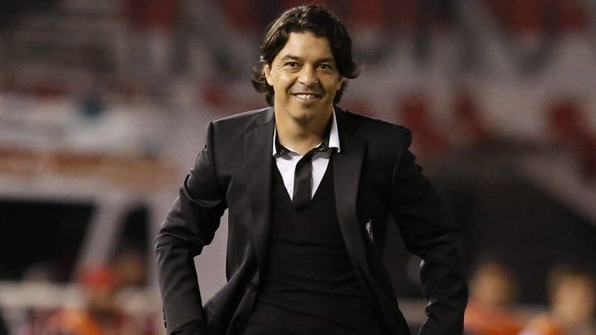
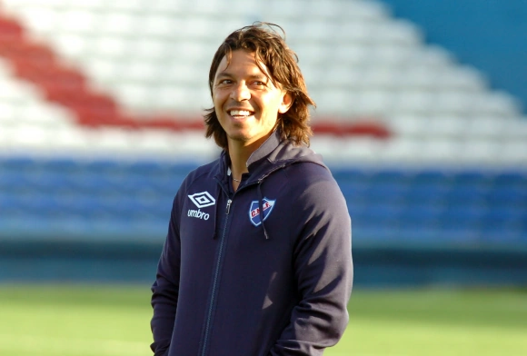
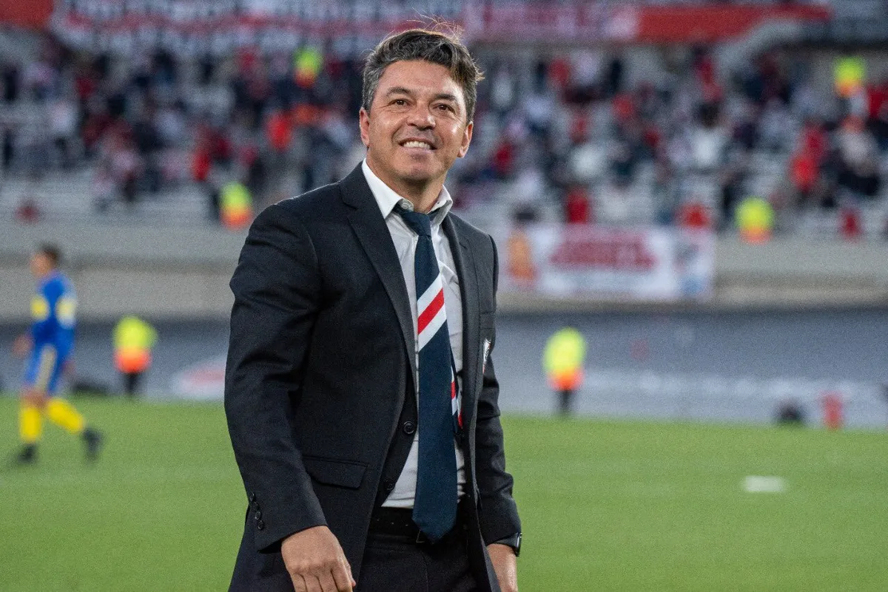

DirectorTecnico
En sus últimos años como jugador decidió comenzar a estudiar para hacerse entrenador de fútbol en la Escuela de Técnicos de Vicente López, donde coincidió como compañero de cursada con Matías Biscay.A lo largo de los años como entrenador tuvo su primera etapa en nacional de uruguay, luego en River Plate que permanecio ocho años y este ultimo recientemente Al-Ittihad
Nacional de Uruguay
En su primer semestre obtuvo el torneo apertura que clasificó al equipo a la definición del campeonato a disputarse a mitad del año 2012. El 16 de junio del mismo año se consagra campeón Uruguayo 2011-2012 con el Club Nacional de Football, siendo bicampeón con el club uruguayo.A pesar del éxito en el plano local, Nacional quedó eliminado de la Copa Sudamericana 2011 en segunda fase, y en la Copa Libertadores 2012 cayó eliminado en fase de grupos.
River Plate
El 6 de junio de 2014 asumió la conducción técnica de River Plate aqui permanecio durante ocho años y consiguiendo grandes titulos internacionales y locales.Como director técnico de River Plate obtuvo siete títulos nacionales: un Campeonato de Primera División, tres Copas Argentina, dos Supercopas Argentina y un Trofeo de Campeones. En el plano internacional obtuvo siete títulos: dos Copas Libertadores, una Copa Sudamericana, tres Recopas Sudamericanas y una Suruga Bank. Con un total de catorce títulos se convirtió en el entrenador más exitoso del club “Millonario”, superando a Ramón Díaz como anterior poseedor del récord con 9 conquistas.3 Además, es el único entrenador de River Plate en ganar la Copa Libertadores en dos ocasiones y también el único en ganar la Copa Libertadores como jugador y como director técnico.